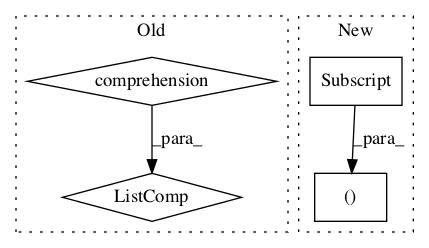

Pattern ID :145

Before Change
def __reduce__(self):
cond_samples = []
for condition in self.conditions():
cond_samples.extend([(condition, sample)
for sample in self[condition].samples()])
return (self.__class__, (cond_samples,))
def conditions(self):
After Change
self[cond].inc(sample)
def __reduce__(self):
kv_pairs = [(cond, self[cond]) for cond in self.conditions()]
return (self.__class__, (), None, None, iter(kv_pairs))
def conditions(self):
In pattern: SUPERPATTERN
Frequency: 3
Non-data size: 4
Instances
Fragment ID: 199138
Project Name: nltk/nltk
Commit Name: b76402dcae08ee6926d19934a52100e51b0916da
Time: 2013-04-18
Author: alex.rudnick@gmail.com
File Name: nltk/probability.py
Class Name: ConditionalFreqDist
Method Name: __reduce__
Fragment ID: 199137
Project Name: nltk/nltk
Commit Name: cc11eb60c8c4ee4b9ec34a14529156c7714b119d
Time: 2009-01-29
Author: stevenbird1@gmail.com
File Name: nltk/corpus/reader/dependency.py
Class Name: DependencyCorpusView
Method Name: read_block
Fragment ID: 199143
Project Name: nltk/nltk
Commit Name: e51065b7819088e050cbf18b60afaa30720b120a
Time: 2015-01-31
Author: stevenbird1@gmail.com
File Name: nltk/tag/senna.py
Class Name: SennaTagger
Method Name: tag_sents